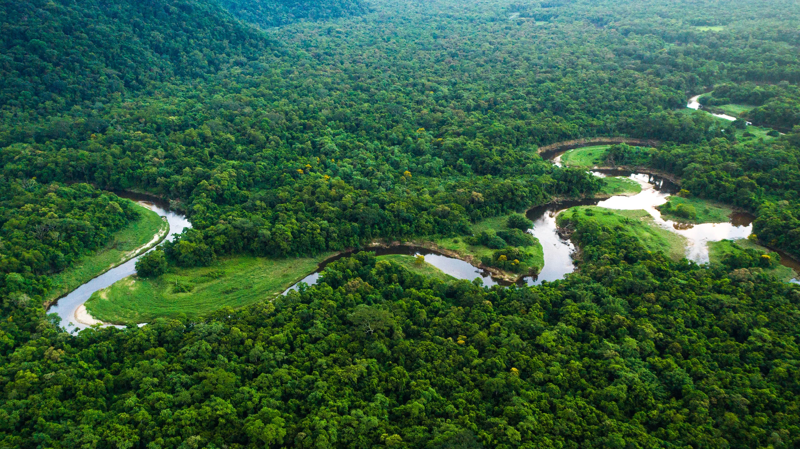

Acerca de la Amazonia
La Amazonia es una selva enorme y llena de vida. Allí hay árboles tan altos que parecen tocar el cielo, ríos gigantes, como el Amazonas, y animales increíbles como monos, tucanes y jaguares. Es un lugar muy especial porque nos da aire puro y muchas plantas que ayudan a curar enfermedades. En la Amazonia también viven personas que conocen bien la selva y la cuidan, como si fueran sus amigos. Es importante proteger este lugar porque sin él, el mundo perdería un gran tesoro.
Actividades
- Busca en casa: Los niños pueden buscar cosas que vienen de la selva tropical, como frutas o chocolate, y aprender de dónde vienen.
- Sonidos del Amazonas: Escuchen grabaciones de animales del Amazonas y adivinen qué animal está haciendo cada sonido.